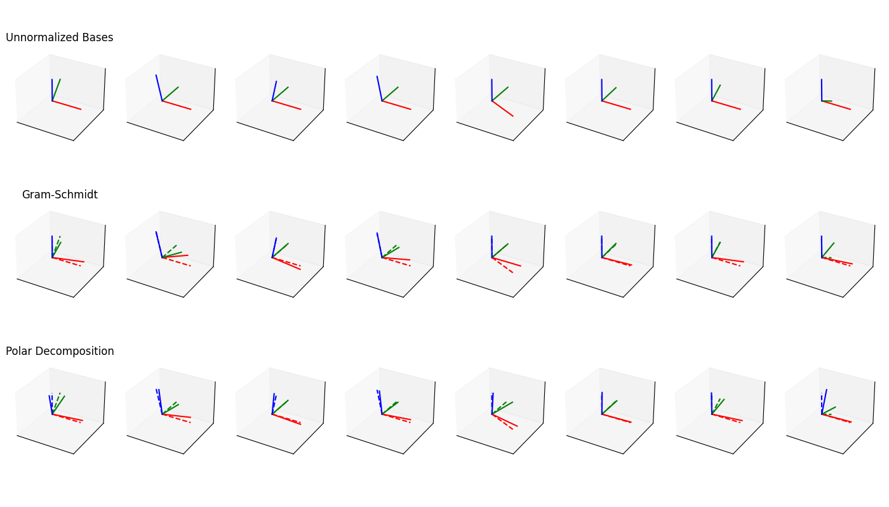

Note
Go to the end to download the full example code.
Plot Polar Decomposition#
Robust polar decomposition orthonormalizes basis vectors (i.e., rotation matrices). It is more expensive than standard Gram-Schmidt orthonormalization, but it spreads the error more evenly over all basis vectors. The top row of these plots shows the unnormalized bases that were obtained by randomly rotating one of the columns of the identity matrix. The middle row shows Gram-Schmidt orthonormalization and the bottom row shows orthonormalization through robust polar decomposition. For comparison, we show the unnormalized basis with dashed lines in the last two rows.
JIT-compiled Gram-Schmidt orthogonalization: 0.10429 s
JIT-compiled robust polar decomposition: 0.39783 s
Gram-Schmidt orthogonalization: 0.09313 s
Robost polar decomposition: 0.88575 s
/home/dfki.uni-bremen.de/afabisch/Projekte/pytransform3d/pytransform3d/rotations/_plot.py:54: UserWarning: Expected rotation matrix, but it failed the test for inversion by transposition. np.dot(R, R.T) gives array([[ 1.05720187, -0.21547284, -0.08660988],
[-0.21547284, 0.81166131, 0.32624941],
[-0.08660988, 0.32624941, 1.13113681]])
R = check_matrix(R, strict_check=strict_check)
/home/dfki.uni-bremen.de/afabisch/Projekte/pytransform3d/pytransform3d/rotations/_plot.py:54: UserWarning: Expected rotation matrix, but it failed the test for inversion by transposition. np.dot(R, R.T) gives array([[ 1.1810075 , -0.14921235, -0.35493586],
[-0.14921235, 1.12300223, 0.29258907],
[-0.35493586, 0.29258907, 0.69599032]])
R = check_matrix(R, strict_check=strict_check)
/home/dfki.uni-bremen.de/afabisch/Projekte/pytransform3d/pytransform3d/rotations/_plot.py:54: UserWarning: Expected rotation matrix, but it failed the test for inversion by transposition. np.dot(R, R.T) gives array([[ 1.02770255, -0.00322832, 0.16408746],
[-0.00322832, 1.00037621, -0.01912193],
[ 0.16408746, -0.01912193, 0.97192121]])
R = check_matrix(R, strict_check=strict_check)
/home/dfki.uni-bremen.de/afabisch/Projekte/pytransform3d/pytransform3d/rotations/_plot.py:54: UserWarning: Expected rotation matrix, but it failed the test for inversion by transposition. np.dot(R, R.T) gives array([[ 1.07023019, -0.04169216, -0.25211044],
[-0.04169216, 1.02475056, 0.14966539],
[-0.25211044, 0.14966539, 0.90501925]])
R = check_matrix(R, strict_check=strict_check)
/home/dfki.uni-bremen.de/afabisch/Projekte/pytransform3d/pytransform3d/rotations/_plot.py:54: UserWarning: Expected rotation matrix, but it failed the test for inversion by transposition. np.dot(R, R.T) gives array([[ 0.8676452 , -0.3266027 , -0.09037511],
[-0.3266027 , 1.12294118, 0.03401938],
[-0.09037511, 0.03401938, 1.00941359]])
R = check_matrix(R, strict_check=strict_check)
/home/dfki.uni-bremen.de/afabisch/Projekte/pytransform3d/pytransform3d/rotations/_plot.py:54: UserWarning: Expected rotation matrix, but it failed the test for inversion by transposition. np.dot(R, R.T) gives array([[ 1.00451664, -0.06697986, 0.00315241],
[-0.06697986, 0.99328314, -0.04674896],
[ 0.00315241, -0.04674896, 1.00220024]])
R = check_matrix(R, strict_check=strict_check)
/home/dfki.uni-bremen.de/afabisch/Projekte/pytransform3d/pytransform3d/rotations/_plot.py:54: UserWarning: Expected rotation matrix, but it failed the test for inversion by transposition. np.dot(R, R.T) gives array([[ 1.06777937, -0.25127454, -0.00681401],
[-0.25127454, 0.93153558, 0.02526118],
[-0.00681401, 0.02526118, 1.00068503]])
R = check_matrix(R, strict_check=strict_check)
/home/dfki.uni-bremen.de/afabisch/Projekte/pytransform3d/pytransform3d/rotations/_plot.py:54: UserWarning: Expected rotation matrix, but it failed the test for inversion by transposition. np.dot(R, R.T) gives array([[ 1.01181409, -0.08639439, 0.0648886 ],
[-0.08639439, 0.63178698, -0.4745189 ],
[ 0.0648886 , -0.4745189 , 1.3563989 ]])
R = check_matrix(R, strict_check=strict_check)
import time
from functools import partial
import jax
import jax.numpy as jnp
import matplotlib.pyplot as plt
import numpy as np
import pytransform3d.rotations as pr
import jaxtransform3d.rotations as jr
gram_schmidt = jax.jit(jax.vmap(jr.norm_matrix, in_axes=0, out_axes=0))
robust_polar_decomposition = jax.jit(
jax.vmap(partial(jr.robust_polar_decomposition, n_iter=5), in_axes=0, out_axes=0)
)
start = time.time()
gram_schmidt(jnp.eye(3)[jnp.newaxis]).block_until_ready()
gs_jit_time = time.time() - start
start = time.time()
robust_polar_decomposition(jnp.eye(3)[jnp.newaxis]).block_until_ready()
rpd_jit_time = time.time() - start
n_cases = 8
fig, axes = plt.subplots(3, n_cases, subplot_kw={"projection": "3d"}, figsize=(14, 8))
ax_s = 1.0
plot_center = jnp.array([-0.2, -0.2, -0.2])
for ax in axes.flat:
ax.set_xticks([])
ax.set_yticks([])
ax.set_zticks([])
ax.set_xlim(-ax_s, ax_s)
ax.set_ylim(-ax_s, ax_s)
ax.set_zlim(-ax_s, ax_s)
titles = ["Unnormalized Bases", "Gram-Schmidt", "Polar Decomposition"]
for ax, title in zip(axes[:, 0], titles, strict=False):
ax.set_title(title)
rng = np.random.default_rng(46)
R_unnormalized = jnp.array([jnp.eye(3) for _ in range(n_cases)])
for i in range(n_cases):
random_axis = rng.integers(0, 3)
R_unnormalized = R_unnormalized.at[i, :, random_axis].set(
jnp.dot(
pr.random_matrix(rng, cov=0.1 * jnp.eye(3)),
R_unnormalized[i, :, random_axis],
)
)
start = time.time()
R_gs = gram_schmidt(R_unnormalized)
gs_time = time.time() - start
start = time.time()
R_rpd = robust_polar_decomposition(R_unnormalized)
rpd_time = time.time() - start
print(f"JIT-compiled Gram-Schmidt orthogonalization: {gs_jit_time:.5f} s")
print(f"JIT-compiled robust polar decomposition: {rpd_jit_time:.5f} s")
print(f"Gram-Schmidt orthogonalization: {gs_time:.5f} s")
print(f"Robost polar decomposition: {rpd_time:.5f} s")
for i in range(n_cases):
pr.plot_basis(axes[0, i], R_unnormalized[i], p=plot_center, strict_check=False)
pr.plot_basis(
axes[1, i], R_unnormalized[i], p=plot_center, strict_check=False, ls="--"
)
pr.plot_basis(axes[1, i], R_gs[i], p=plot_center)
pr.plot_basis(
axes[2, i], R_unnormalized[i], p=plot_center, strict_check=False, ls="--"
)
pr.plot_basis(axes[2, i], R_rpd[i], p=plot_center)
plt.tight_layout()
plt.show()
Total running time of the script: (0 minutes 2.140 seconds)